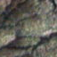
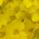
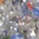
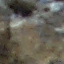
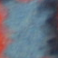
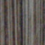

Cvičení z rozpoznáváníPattern recognition workshops
Vyzkoušejte, proč stejný klasifikátor pozná další výřez známé fotografie snáz než materiál na novém snímku. Pak sledujte cestu od pixelu přes příznak až po vyhodnocení na mozaice.Find out why the same classifier recognises another patch of a familiar photograph more easily than material in an unseen image. Then follow the path from a pixel to a feature and a scored mosaic.






Program cvičeníWorkshop sequence
- 0145 min
Co označuje pixel v SEG?What does a SEG pixel label mean?
Přečtěte hodnotu pixelu ve vstupu, ve výsledku a v referenci. Co se změní po prohození čísel štítků?Read one pixel in the input, output and reference. What changes when you swap label IDs?
- 0290 min
Pozná klasifikátor materiál, nebo fotografii?Does the classifier recognise the material or the photograph?
Porovnejte dvě rozdělení týchž 576 výřezů. U chybné předpovědi najděte jejího trénovacího souseda.Compare two splits of the same 576 patches. Trace a wrong prediction to its training neighbour.
- 0390 min
Co rozliší dvě textury?What distinguishes two textures?
Spočítejte dvojice jasů v GLCM. Otočte pruhy a vyzkoušejte, co zachovávají momenty tvaru.Count grey-level pairs in a GLCM. Rotate stripes and see which shape moments stay invariant.
- 0490 min
Kolik rozptylu zachytí jedna osa?How much variation fits along one axis?
Otáčejte osou v oblaku bodů, najděte PC1 a sledujte vliv počtu složek na rekonstrukci a segmentaci.Rotate an axis through a point cloud, find PC1 and see how many components a reconstruction or segmentation needs.
- 0590 min
Kdo určuje, co je třída?Who decides what a class is?
Projděte k-means krok po kroku. Porovnejte hlasování sousedů, hustotní shluky a hranici SVM.Step through k-means. Compare neighbour votes, density-based clusters and an SVM decision boundary.
- 0690 min
Která změna segmentace pomohla?Which change helped the segmentation?
Překreslete region a přepočítejte CS a CA. Prověřte jedno zlepšení a jedno zhoršení mezi 80 mozaikami.Edit a region and recalculate CS and CA. Inspect one gain and one loss among 80 mosaics.
- 0790 min
Komu patří měření?Whose measurement is it?
Posouvejte práh ověření identity a počítejte oba druhy chyb. Výsledek projektu vysvětlete na příkladu.Move an identity verification threshold and count both types of error. Explain your project result with an example.